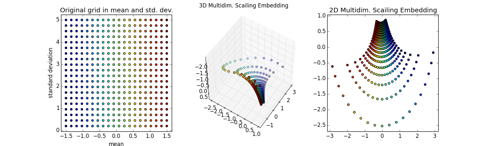

Machine Learning
finding Linux bugs
Stef Walter, Rado Vbrovsky
Red Hat
Stef Walter, Rado Vbrovsky
Red Hat
“Any sufficiently complex system will have bugs. Bugs are entropy,
and entropy is fundamental to this universe.”
— Martin Pitt
Any sufficiently complete testing system
will be "plagued" by test flakes
Cockpit Integration Tests
Real Failures: + 42,764
Known Issues: + 54,371
Test Flakes: + 25,420
-------------------------
Test Failures: 122,555
-------------------------
Total Runs: 2,466,742
Data from last 90 days:
https://images-cockpit.apps.ci.centos.org/tests-train-1.jsonl.gz

{
"pull": "https://api.github.com/repos/cockpit-project/cockpit/pulls/9230",
"revision": "2e4fd7d309b7f1c591c099e4041f8db20459c5ae",
"status": "failure",
"context": "verify/fedora-27",
"date": "2018-05-24T15:48:53Z",
"merged": true,
"test": "testTeamActive (check_networking_team.TestNetworking)",
"url": "http://fedorapeople.org/groups/cockpit/logs/pull-9230-20180524-150404-2e4fd7d3-verify-fedora-27/log",
"tracker": "https://api.github.com/repos/cockpit-project/cockpit/issues/8905",
"log": "...Error: timeout\nwait_js_cond(ph_in_text(\"#network-interface .panel:contains('tteam')\""
}
| 90+ APIs: File, Command, REST, DBus, Socket | ||||
|---|---|---|---|---|
| abrt | AppStream | apt-get | atomic | Candlepin /candlepin/ |
| chpasswd | CloudForms | cryptsetup | curl | dbus-daemon |
| device-mapper | docker-storage-setup | docker | e2fsprogs | etcd |
| /etc/kdump.conf | /etc/passwd | firewalld | FreeIPA | GnuTLS |
| GSSAPI | hostnamed | ipa-client | ipa-client | iproute |
| iptables | iscsi-tools | journalctl | kdump | klist |
| krb5 | Kubernetes /api/ | lastlog | libvirt | loginctl |
| lvm | mdadm | NetworkManager | NetworkManager-team | oddjob |
| Openshift /oapi/ | Openshift OAuth2 | openssl | ostree | oVirt /api/ |
| PackageKit | passwd | PCP | PolicyKit | /proc/meminfo... |
| /proc/mounts | /proc/net/dev... | procps-ng | /proc/stat | pwquality |
| qemu | realmd | rm ... | rpmostreed | rpm |
| selinux-policy-targeted | selinux-utils | setenforce | Setroubleshootd | shadow-utils |
| shutdown | sosreport | ssh-agent | sshd | ssh-keygen |
| ssh | sssd | storaged | subscription-manager | sudo |
| /sys/fs/cgroup | /sys/kernel | /sys/power | systemd | timedated |
| Tuned | udev | UDisks2 | /usr/bin/kubectl | /usr/bin/timedatectl |
| /usr/bin/virt-install | /var/log/wtmp | /var/run/utmp | virsh | who/w |
| xfsprogs | yum |
Testing flakes are those bugs. That entropy.
Machine Learning
Cluster the test failures

ML techniques in use
- Preprocessing
- Term Frequency - Inverse Document Frequency
- Normalized Compression Distance
- DBSCAN unsupervised clustering
- Multi-Dimensional Scaling
- K-nearest Neighbors classification
Raw log input
# ----------------------------------------------------------------------
# testTeam (check_networking_team.TestNetworking)
#
NAME UUID TYPE DEVICE
System eth0 5fb06bd0-0bb0-7ffb-45f1-d6edd65f3e03 802-3-ethernet eth0
virbr0 82404faf-cb6b-4f4c-8eb6-65fc1a2ff8da bridge virbr0
System eth1 9c92fad9-6ecb-3e6c-eb4d-8a47c6f50c04 802-3-ethernet --
52:54:01:00:00:03 -> eth2
52:54:01:00:00:03 -> eth2
not ok 139 testTeam (check_networking_team.TestNetworking) duration: 106s
Traceback (most recent call last):
File "/build/cockpit/bots/../test/verify/check-networking-team", line 81, in testTeam
b.wait_present("#network-interface-slaves tr[data-interface='%s']" % iface1)
File "/build/cockpit/test/common/testlib.py", line 230, in wait_present
return self.wait_js_func('ph_is_present', selector)
File "/build/cockpit/test/common/testlib.py", line 224, in wait_js_func
return self.phantom.wait("%s(%s)" % (func, ','.join(map(jsquote, args))))
File "/build/cockpit/test/common/testlib.py", line 821, in
return lambda *args: self._invoke(name, *args)
File "/build/cockpit/test/common/testlib.py", line 847, in _invoke
raise Error(res['error'])
Error: timeout
Wrote TestNetworking-testTeam-rhel-7-127.0.0.2-2601-FAIL.png
Wrote TestNetworking-testTeam-rhel-7-127.0.0.2-2601-FAIL.html
Journal extracted to TestNetworking-testTeam-rhel-7-127.0.0.2-2601-FAIL.log
Journal extracted to TestNetworking-testTeam-fedora-26-127.0.0.2-2602-FAIL.log
Extracting the logs
# ----------------------------------------------------------------------
# testTeam (check_networking_team.TestNetworking)
#
NAME UUID TYPE DEVICE
System eth000 xxxxxxxx-xxxx-xxxx-xxxx-xxxxxxxxxxxx 000-000-ethernet eth000
virbr000 xxxxxxxx-xxxx-xxxx-xxxx-xxxxxxxxxxxx bridge virbr000
System eth000 xxxxxxxx-xxxx-xxxx-xxxx-xxxxxxxxxxxx 000-000-ethernet --
000:000:000:000:000:000 -> eth000
000:000:000:000:000:000 -> eth000
not ok
Traceback (most recent call last):
File "check-networking-team", line 000, in testTeam
b.wait_present("#network-interface-slaves tr[data-interface='%s']" % iface000)
File "testlib.py", line 000, in wait_present
return self.wait_js_func('ph_is_present', selector)
File "testlib.py", line 000, in wait_js_func
return self.phantom.wait("%s(%s)" % (func, ','.join(map(jsquote, args))))
File "testlib.py", line 000, in
return lambda *args: self._invoke(name, *args)
File "testlib.py", line 000, in _invoke
raise Error(res['error'])
Error: timeout
Wrote png
Wrote html
Journal extracted to log
Journal extracted to log
Term Frequency - Inverse Doc Frequency
# testTeam (check_networking_team.TestNetworking)
virbr000 xxxxxxxx-xxxx-xxxx-xxxx-xxxxxxxxxxxx bridge virbr000
File "check-networking-team", line 000, in testTeam
b.wait_present("#network-interface-slaves tr[data-interface='%s']" % iface000)
Normalized Compression Distance
Z = lambda v: len(lz4.frame.compress(v))
DBSCAN
Density-based spatial clustering of applications with noise

Multi-Dimensional Scaling
k-nearest neighbor

Make it do something

0 verify/fedora-27 testBasic (check_ovirt.TestOVirtMachines)
0 verify/fedora-27 testBond (check_networking_bond.TestNetworking)
0 verify/fedora-27 testDeployDialog (check_kubernetes.TestNulecule)
0 verify/fedora-27 testDeployDialog (check_openshift.TestOpenshift)
0 verify/fedora-27 testDeployDialog (check_openshift.TestOpenshiftPrerelease)
0 verify/fedora-27 testDockerCommandInfo (check_openshift.TestRegistryPrerelease)
0 verify/fedora-27 testExternalConsole (check_machines.TestMachines)
0 verify/fedora-27 testIpa (check_realms.TestRealms)
0 verify/fedora-27 testKubevirtMachinesCreate (check_openshift.TestOpenshift)
0 verify/fedora-27 testLuks (check_storage_luks.TestStorage)
0 verify/fedora-27 testPendingClaim (check_kubernetes.TestKubernetes)
0 verify/fedora-27 testRaid (check_storage_mdraid.TestStorage)
50 verify/fedora-27 testBasic (check_apps.TestApps)
50 verify/fedora-27 testBasic (check_networking_basic.TestNetworking)
50 verify/fedora-27 testHostToMaintenance (check_ovirt.TestOVirtMachines)
50 verify/fedora-27 testKubevirtMachinesList (check_openshift.TestOpenshiftPrerelease)
50 verify/fedora-27 testProjectGroups (check_openshift.TestRegistryPrerelease)
60 verify/fedora-27 testBasic (check_kdump.TestKdump)
100 verify/fedora-27 testCheckpoint (check_networking_checkpoints.TestNetworking)
100 verify/fedora-27 testDosParts (check_storage_msdos.TestStorage)
100 verify/fedora-27 testISCSI (check_storage_iscsi.TestStorage)
100 verify/fedora-27 testKubevirtMachinesCreate (check_openshift.TestOpenshiftPrerelease)
100 verify/fedora-27 testKubevirtMachinesList (check_openshift.TestOpenshift)
100 verify/fedora-27 testKubevirtVmInstance (check_openshift.TestOpenshift)
100 verify/fedora-27 testPendingClaim (check_openshift.TestOpenshift)
100 verify/fedora-27 testPendingClaim (check_openshift.TestOpenshiftPrerelease)
100 verify/fedora-27 testProjectPolicy (check_openshift.TestRegistry)
100 verify/fedora-27 testUndeployKubevirt (check_openshift.TestOpenshift)
100 verify/fedora-27 testVCPU (check_ovirt.TestOVirtMachines)
Real bugs
-
Example: Shadow utils usage races
cluster-7-112.log
https://github.com/cockpit-project/cockpit/pull/9979 -
Example: Networkd + SELinux breaks the boot
cluster-124-4.log
-
Example: Race invalid update of UI state
cluster-95-28.log
https://github.com/cockpit-project/cockpit/pull/10127 -
Example: PackageKit crashing intermittently
cluster-14-34.log No bug filed yet
I want!
Use it yourself
$ git clone git@github.com:cockpit-project/cockpituous $ cd cockpituous
$ ./train-tests -v test-example.jsonl.gz
Loading existing tests data
14208: Items to train
...
100933632: Computed distances in 1181 seconds on 32 cores
332: Clusters (13962 items, 246 noise)
$ ./predict-tests -v test-predict.jsonl
{
"test": [ [ "testTeamActive", 2 ], [ "testTeamBond", 5 ] ],
"status": [ [ "failure", 7 ] ],
"context": [ [ "verify/fedora-27", 3 ], [ "verify/fedora-27", 4 ] ],
"date": [ "2018-05-24T15:48:53Z", "2018-05-30T01:01:30Z" ],
"merged": [ [ true, 5 ], [ false, 1 ], [ null, 1 ], ],
"tracker": [ [ "https://api.github.com/repos/cockpit-project/cockpit/issues/8905", 3 ] [ null, 4 ] ]
}
Use it with Kubernetes
$ kubectl create -f learn/cockpit-learn.yaml
$ curl --progress-bar --fail --upload-file learn/test-example.jsonl.gz \
http://cockpit-learn.project.srv.cluster.local/train/test-example.jsonl.gz
$ curl -d '@learn/test-predict.jsonl' \
http://cockpit-learn.project.srv.cluster.local/predict
What's next
- Retrieving data automatically
- Tracking known issues automatically
The Kernel Oraculum
Rado Vbrovsky, Red Hat

Ludicrous Claim: Any testing system that does not have enough flakes, should introduce more tests or more mutations.
Questions?
cockpit-project.org
#cockpit on FreeNode
Credits:
Clusters: Chire on Wikipedia
CC BY-NC 2.5: Comic by XKCD.com